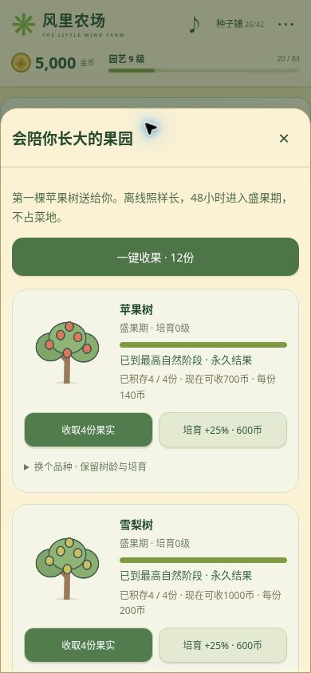
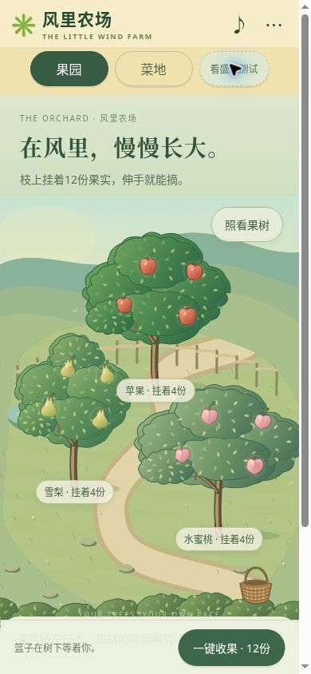
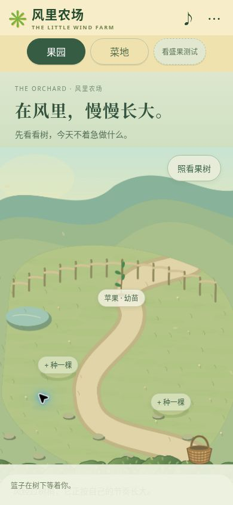
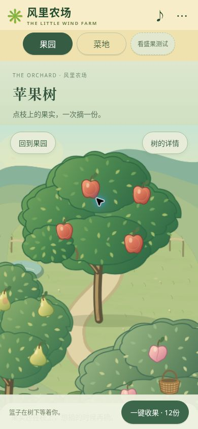
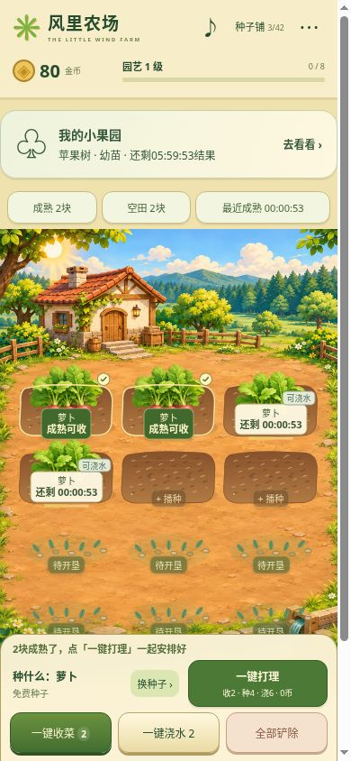
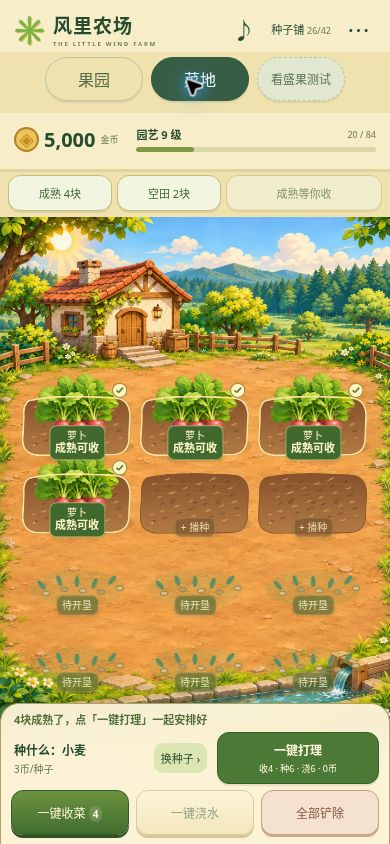

只供对比的果园试玩，正式首页仍为 V3.0。测试档与正式农场隔离。
进入果园试玩默认幼苗；点顶部“看盛果测试”，立即试三棵有果的树。点树近看，点枝上的果实摘一份。页面底部还可快进至0／6／24／48小时。测试按钮会重置这份测试档。






以上为真实浏览器的手机宽度截图，不是安卓实机。已做360／390／412宽度检查与规则回归；未做安卓硬件、真实触屏手感、长期耗电或真等待48小时验证。没有使用王者素材、角色或经济设计。